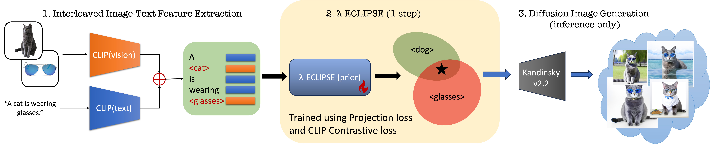

Abstract
Despite the recent advances in personalized text-to-image (P-T2I) generative models, subject-driven T2I
remains challenging.
The primary bottlenecks include
1) Intensive training resource requirements,
2) Hyper-parameter sensitivity leading to inconsistent outputs, and
3) Balancing the intricacies of novel visual concept and composition alignment.
We start by re-iterating the core philosophy of T2I diffusion models to address the above limitations.
Predominantly, contemporary subject-driven T2I approaches hinge on Latent Diffusion Models (LDMs), which
facilitate T2I mapping through cross-attention layers.
While LDMs offer distinct advantages, P-T2I methods' reliance on the latent space of these diffusion
models significantly escalates resource demands, leading to inconsistent results and necessitating
numerous iterations for a single desired image.
Recently, ECLIPSE has demonstrated a more resource-efficient
pathway for training UnCLIP-based T2I models,
circumventing the need for diffusion text-to-image priors.
Building on this, we introduce λ-ECLIPSE.
Our method illustrates that effective P-T2I does not necessarily depend on the latent space of diffusion
models.
λ-ECLIPSE achieves single, multi-subject, and
edge-guided
T2I personalization with just 34M parameters and is trained on a mere 74 GPU hours using 1.6M image-text
interleaved data.
Through extensive experiments, we also establish that λ-ECLIPSE surpasses existing baselines in
composition
alignment while preserving concept alignment performance, even with significantly lower resource
utilization.
High-level overview of the how λ-ECLIPSE (34M) prior model can effectively perform Multi-Subject driven T2I.
Method
We extend the ECLIPSE T2I prior with the image-text interleaved training to perform the Multi-Subject T2I.

Relevant Projects

WOUAF
Weight Modulation for User Attribution and Fingerprinting in T2I Models.

ConceptBed
Evaluating Concept Learning Abilities of T2I Models